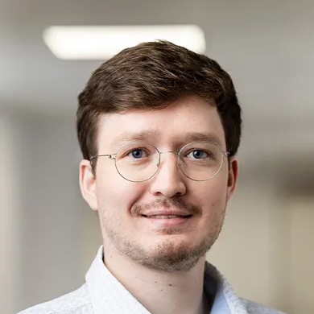
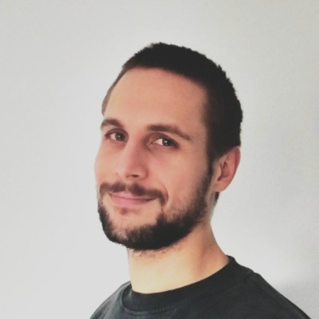
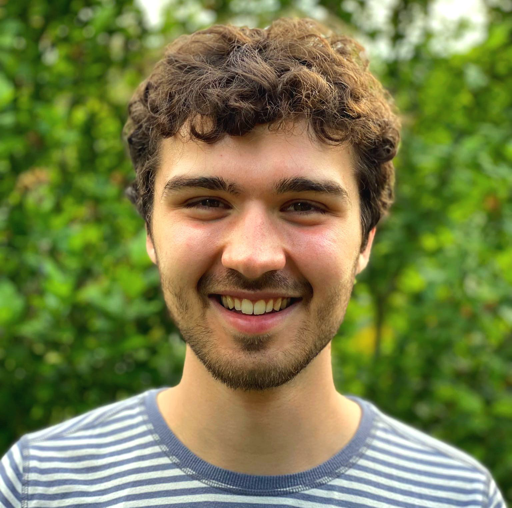
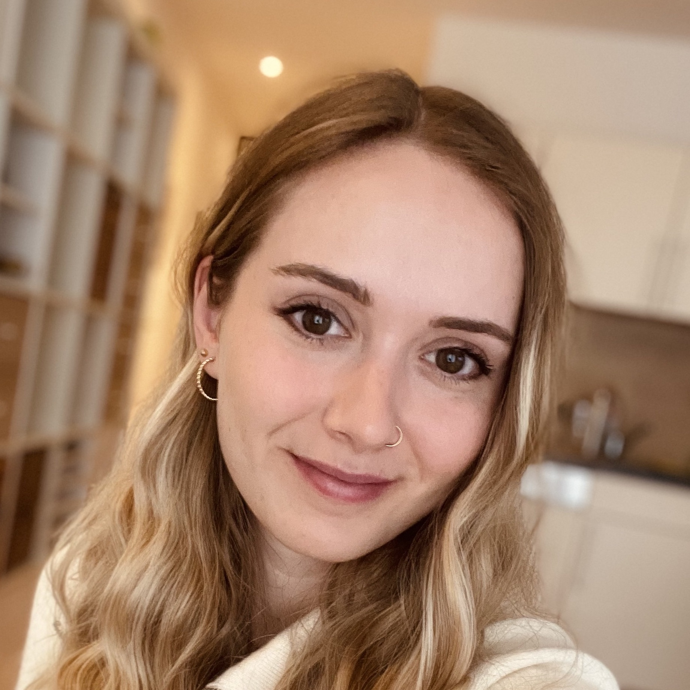
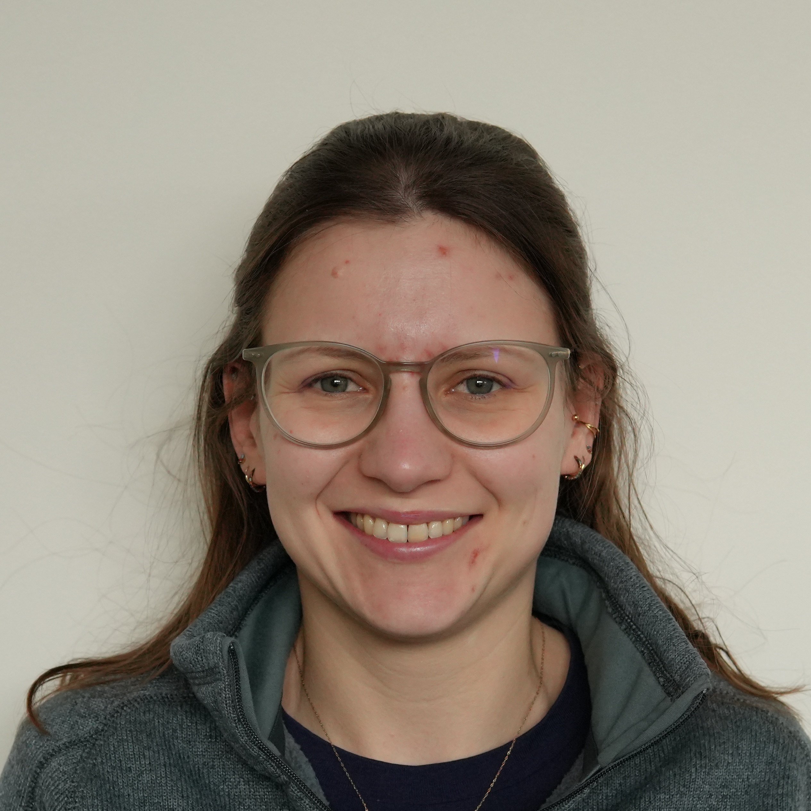
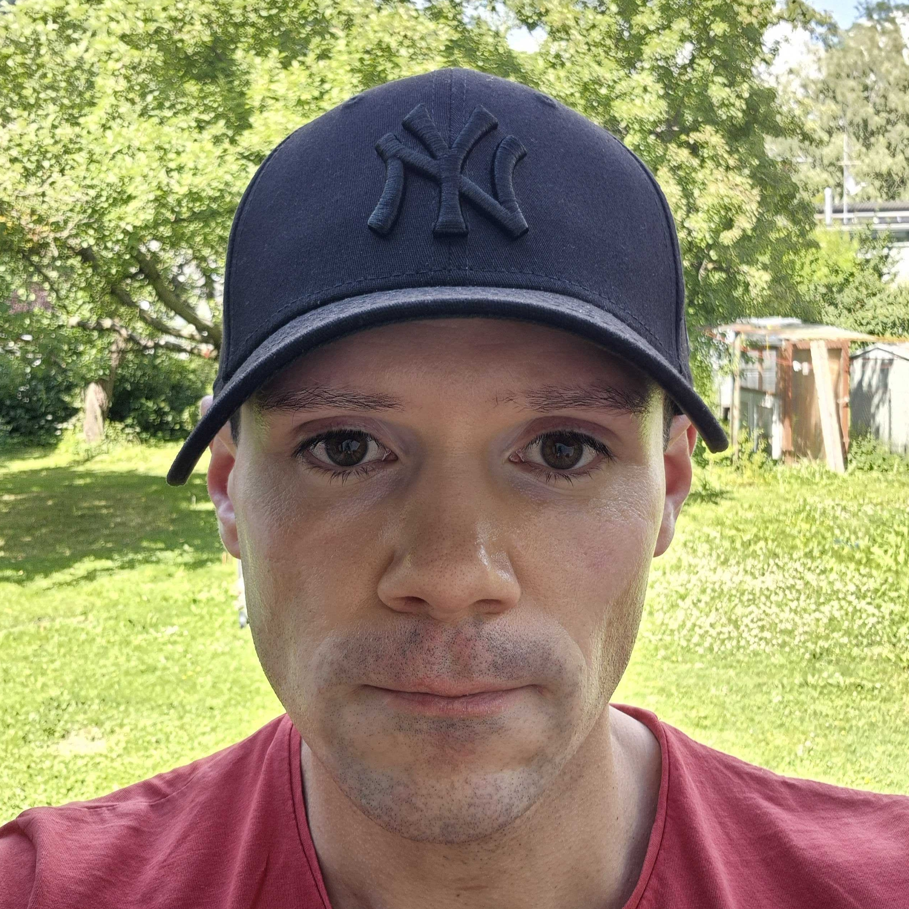
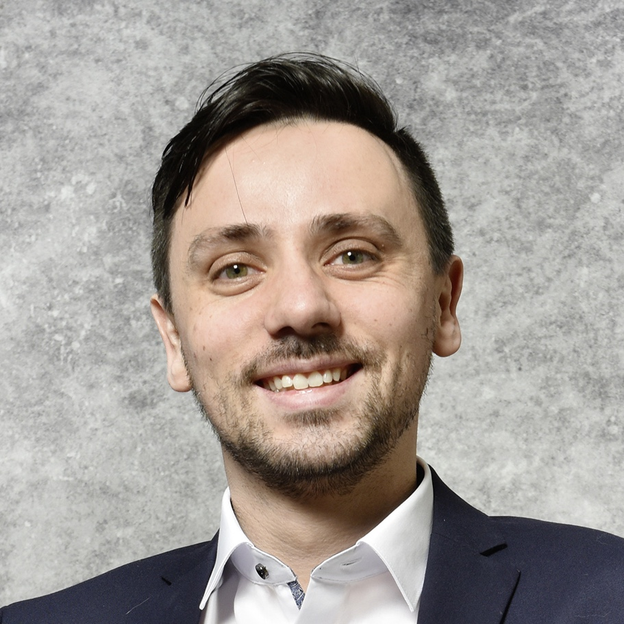

Team
Research Focus: Computational analysis of multi-omics data to inform precision and personalized medicineGet in touch
Credits: T. Steinlechner
Francesca Finotello
Group Leader, Associate Professor
Deciphering the cellular complexity of the tumor microenvironment via in silico deconvolution and single-cell transcriptomic analysisGet in touch
Credits: T. Steinlechner
Lorenzo Merotto
PhD student
Computational analysis of cancer multiomics data to investigate B-cell malignant transformationGet in touch
Credits: T. Steinlechner
Irene Rigato
PhD student

Scalable data analysis of multi-modal single-cell and spatial datasets in cancer immunologyGet in touchCredits: T. Steinlechner
Felix Petschko
PhD student

RectanglePro: advanced cell-type deconvolutionGet in touchCredits: B. Eder
Constantin Zackl
Software engineer

Evolution of a unified deconvolution framework into a comprehensive ecosystem for spatial tissue architecture analysisGet in touchCredits: C. Zackl
Constantin Zackl
Master's student

An integrative single-cell atlas of glioblastoma to investigate the drivers of tumor-infiltrating lymphocyte (TIL) expansion outcomeGet in touchCredits: K. Huber
Katharina Huber
Master's student

Computational analysis of tumor infiltrating cell (TIL) potency during ex vivo expansionGet in touchCredits: L. Schoettle
Laura Schoettle
Master's student (Project Study)

Single-cell-informed deconvolution of the tumor microenvironment of head and neck cancerGet in touchCredits: A. Albrecht
Andreas Albrecht
Master's student (Project Study)

Spatially resolved single-cell immune profiling: extending Scirpy to spatial multi-omics dataGet in touchCredits: M. Vinzenz
Markus Vinzenz
Bachelor's student
Alumni and past projects
- Julia Lehner: Computational quantification of tumor infiltrating cell potency in glioblastoma (Internship)
- Katharina Schuler: Single-cell-informed deconvolution of brain organoids (Master's thesis)
- Sebastian Tietz: Characterization of epithelial-cell programs from breast cancer single-cell RNA-sequencing data (Project Study)
- Esra Baytak: Leveraging the complementarity of omics-based models to predict patients' response to cancer immunotherapy (Master's thesis)
- Markus Ausserhofer: Computational prediction of non-canonical tumor antigens from RNA sequencing data (PhD thesis)
- Maria Zopoglou: Computational analysis of single-cell RNA sequencing data to quantify dynamic changes in cancer cell regulatory networks during treatment (Master's thesis)
- Bernhard Eder: Hierarchical deconvolution of bulk transcriptomics (Master's thesis)
- Christina Schwaiger: Prediction and zero correction of gene expression measurements for spatial transcriptomics (Master's thesis)
- Luc Wirion: A consensus approach to cell-type deconvolution of bulk transcriptomics informed by multiple single-cell atlases (Bachelor's thesis)
- Mario Kanetscheider: Implementation of a Python-based pipeline for the analysis of single-cell B-cell receptor (Bachelor's thesis)
- Franziska Chiara Hörburger: Computational analysis of spatial transcriptomics data to investigate cell-cell colocalization patterns in the tumor microenvironment (Master's thesis)
- Tobias Ganzenhuber: Improving sequence clustering scalability for adaptive immune cell repertoire analysis (Bachelor's thesis)
- Maria Clara Staropoli: Prediction of drug response from tumor RNA sequencing data (Erasmus+ internship)
- Arianna Zuanazzi: Curation of a single-cell RNA-sequencing atlas of breast cancer (Erasmus+ internship)
- Manuel Fiegl: Molecular genetic role of innate system mediated TLR3 signalling in zebrafish cardiac regeneration and proliferation (Master's thesis)
- Max de Rooij: Mathematical modelling of T cell phenotype polarization (Master's thesis)
- Silvia Cremon: Computational deconvolution of tumor cellular composition from spatial transcriptomics data (Master's thesis)